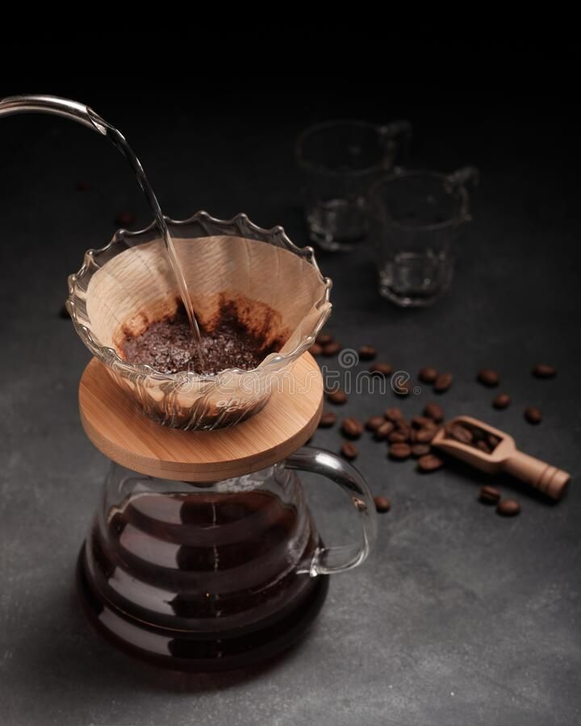
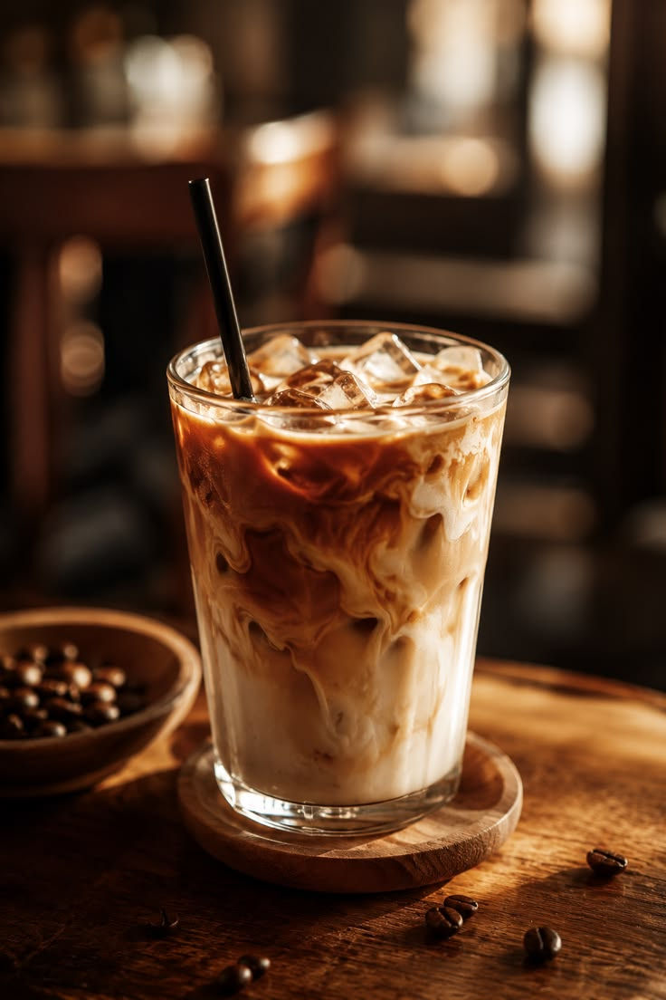
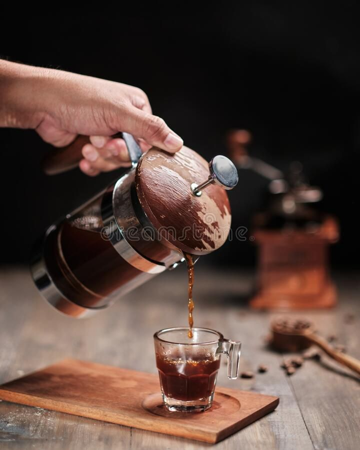
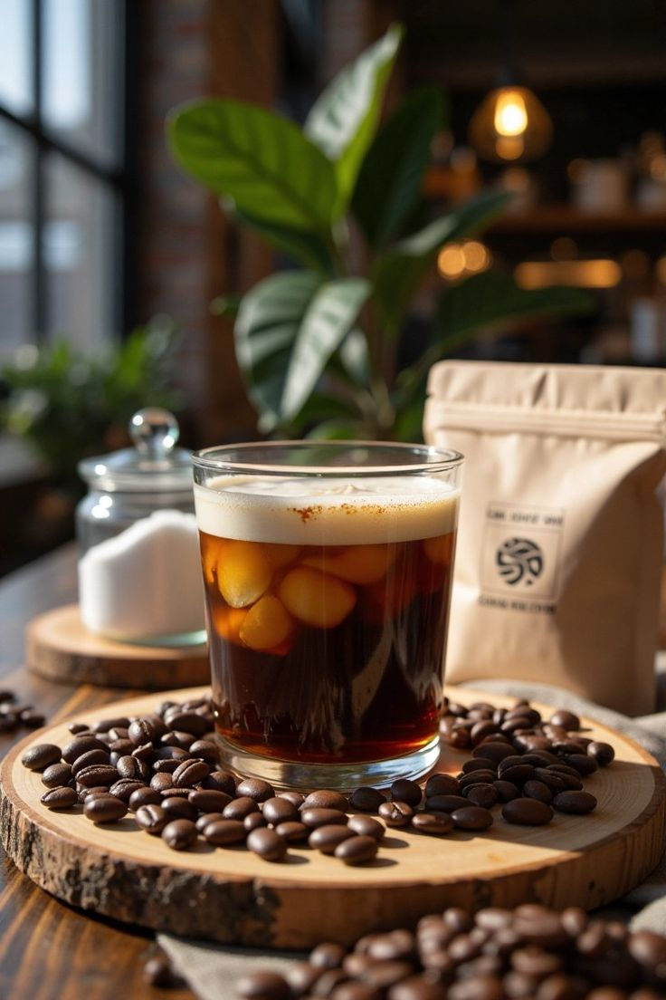
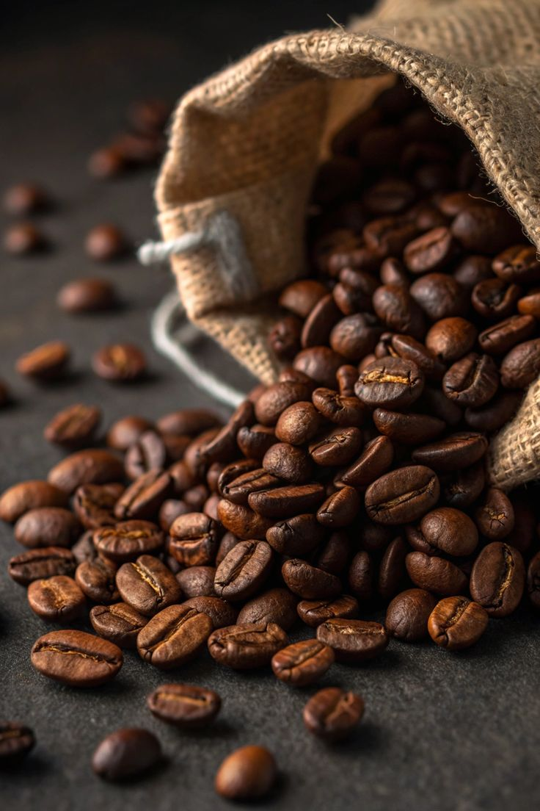
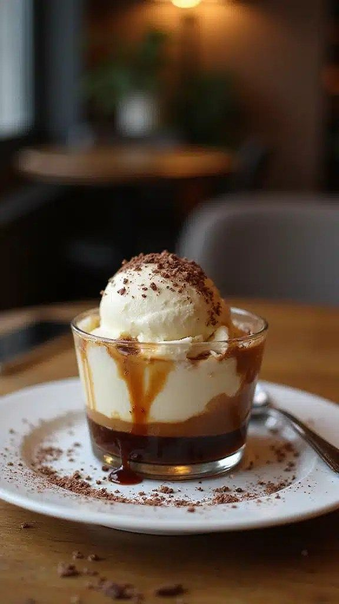

Welcome to our interactive coffee gallery showcasing various brewing methods, roast profiles, and specialty espresso drinks from around the world.
Explore our curated collection below to learn more about distinct flavor notes, brewing techniques, and bean origins across different screen layouts.







